KIF18A在肝细胞癌转移中的双重角色
原文：https://mp.weixin.qq.com/s?__biz=MzAwMzIzOTk5OQ==&mid=2247528014&idx=1&sn=d285c9ebd415be328fc682d00e6182c0&chksm=9b3c171eac4b9e082cafdc7d1f6c05c48a1e3ec84d7aa0fe2e229c0f39aaa7ad8cb7cd481bc3#rd 合集：单细胞教程全收录 / 文献速递
写在前面
这是一篇还在预印本的对我们进行致谢 的文章：
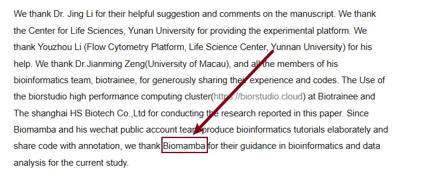
肝细胞癌（HCC）是一种高度侵袭性的癌症，其特征是细胞分化异常、浸润性生长、早期转移和预后不良。尽管癌症治疗取得了显著进展，但HCC患者的5年总生存率仍然极低，这主要是由于转移和复发率高。肝细胞癌的进展受到失巢凋亡的复杂影响，这一过程对于维持组织稳态和防止异常细胞增殖至关重要。失巢凋亡可以从原发性肿瘤中分离出来，在循环中存活，最终形成继发性肿瘤，促进疾病的传播。染色体不稳定性（CIN）是HCC和许多其他癌症的另一个标志，其特征是癌症细胞内染色体数量异常和遗传多样性增加，这与对治疗的抵抗和更具攻击性的肿瘤行为有关。原文链接：https://www.biorxiv.org/content/10.1101/2024.12.20.629627v1.full
这篇文章中，作者通过bulk RNA-seq发现了癌症中细胞失活细胞耐药性与CIN之间的联系，scRNA-seq揭示癌症转移生态位，发现circulating tumor cells （CTCs） 细胞具有模拟免疫细胞表型的能力，建立了在肝细胞癌症中失活细胞耐药性和染色体不稳定性之间的重要联系。
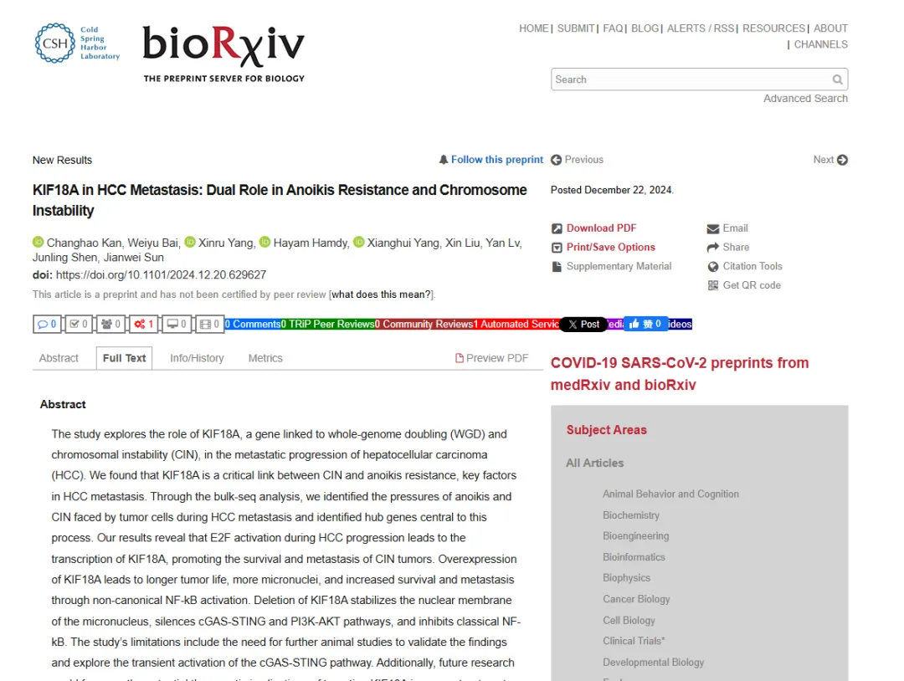
这里也预祝我们的粉丝们早日命中心仪的期刊，若是大家觉得我平时分享的代码或生信教程有那么点 好用，可以在文章里以这种格式致谢Biomamba，希望咱们这个系列也能更新个百八十篇 :
:
*
Since Biomamba and his wechat public account team produce bioinformatics tutorials elaborately and share code with annotation, we thank Biomamba for their guidance in bioinformatics and data analysis for the current study.
如果需要数据分析指导 、生信热点全文复现 、自测数据个性化分析 辅导，欢迎联系客服微信[Biomamba_yunying]
二、分析流程一览
- 数据来源：****
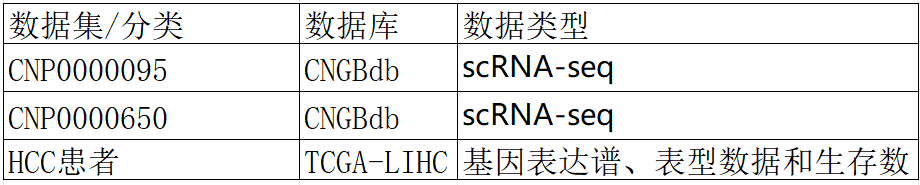
机制概要：****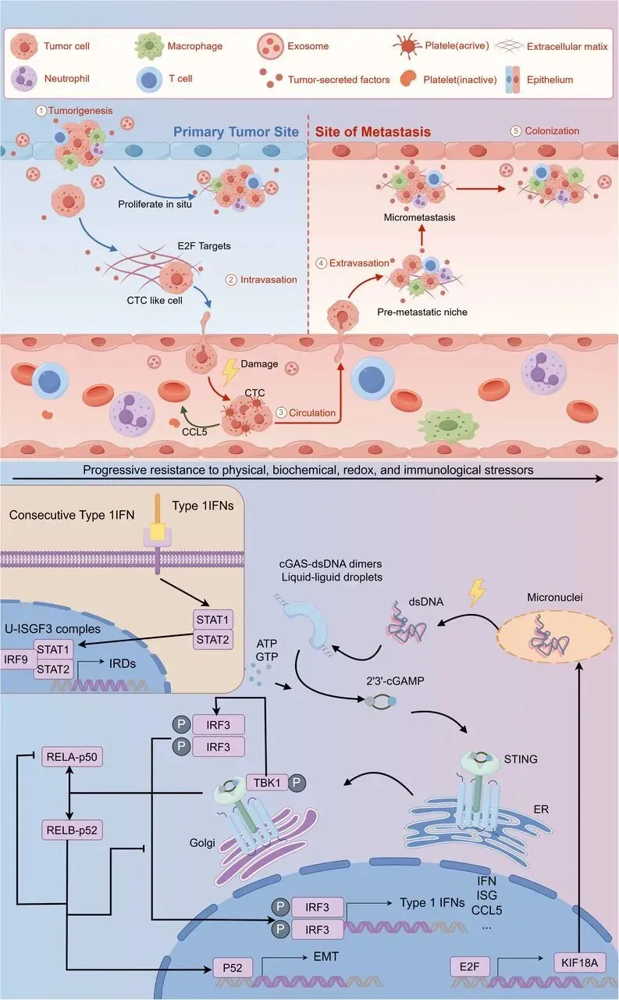
二、主要内容
-
1. 肝癌失巢凋亡耐药和染色体不稳定性 (CIN）的鉴定、功能分析及其与预后的相关性
-
首先作者在TCGA-LIHC中鉴定了差异基因**(|log2FC| > 1.0;p.adj < 0.05),并从 GeneCards 数据库中获得了485个** 失巢凋亡相关基因(ARGs)(Fig.A)，使用单变量 Cox 比例风险回归分析发现 41 个 ARGs 与预后结果显著相关。之后通过富集分析发现大多数基因参与 BP 类别中的细胞器裂变、核分裂和有丝分裂。(Fig.1 C)
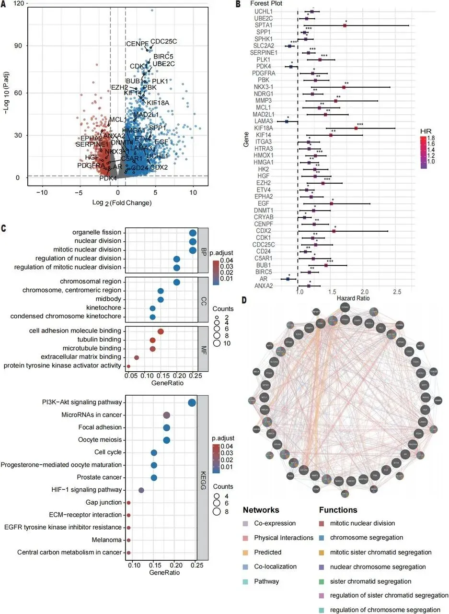
Fig.1
1.
- **2. **基于 ARS 模型的肝癌预后风险评估
在上述发现的基础上，作者从 LIHC 数据集中随机选择了 241 个样本作为训练集，从 100 个样本作为测试集。随后，使用失巢凋亡相关预后基因( ARPGs) 进行了 LASSO 回归分析，从而鉴定了 6 个基因。发现这六个已鉴定的基因 （KIF18A、SPP1、PLK1、SLC2A2、EZH2 和 MMP3） 与 LIHC 个体的生存结果之间存在显著的关联，表明它们可能作为预后标志物 。并且发现随着两个数据集中 ARS 水平的增加，ARS 模型准确预测了更高的死亡率（Fig.2A-C )。之后对 TCGA-LIHC 和 GSE14520 的数据进行了全面分析，得出了一致的结果(Fig.2D)
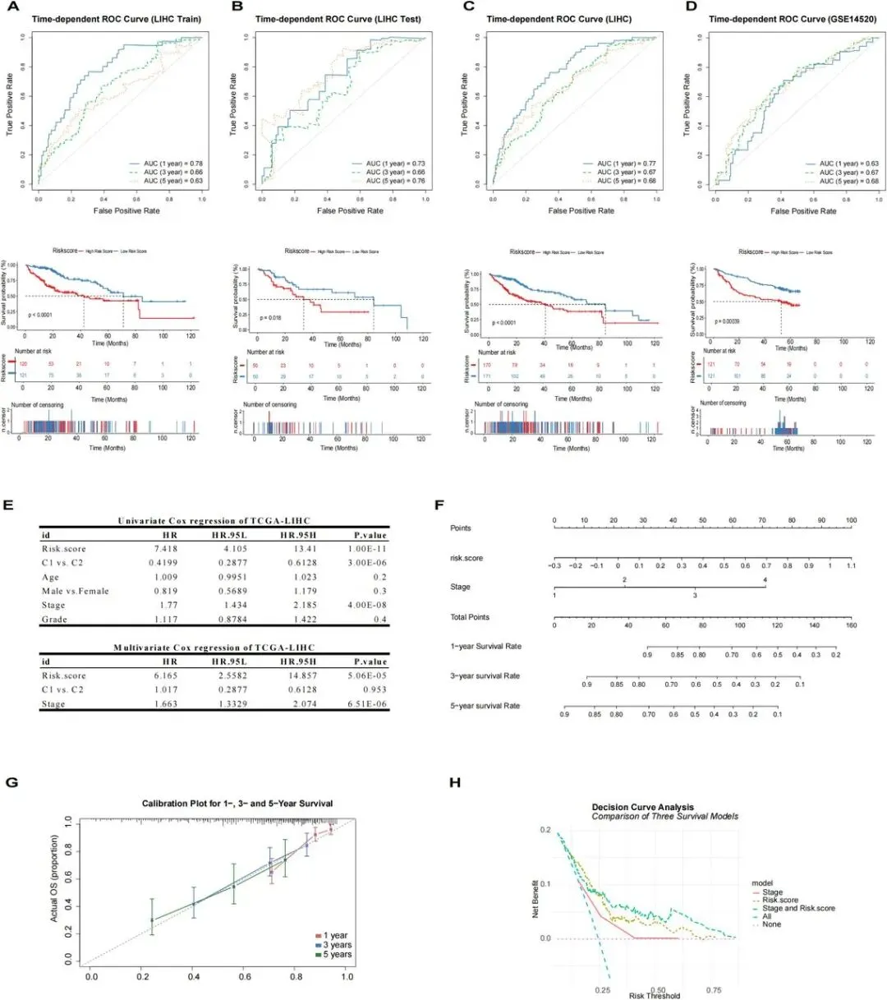
Fig.2
**3.**单细胞数据分析揭示肝癌的转移生态位
随后作者利用Seurat 进行细胞分类和基因鉴定并且使用UMAP方法可视化 PT-CTC 和 RT-CTC。发现对于除 circulating tumor cells(CTC) 之外的所有细胞，如含有 CTC 的原代细胞，高度表达 CD45 （PTPRC）的免疫细胞，高表达 EPCAM的非免疫细胞(Fig3A-B),CTC 样细胞显示出一定程度的 T 细胞标志物基因表达（Fig.3C-3D ），表明存在一定程度的免疫细胞混合，并且通过inferCNV 、 GO 和 KEGG 进一步证明了这个结果。
** **
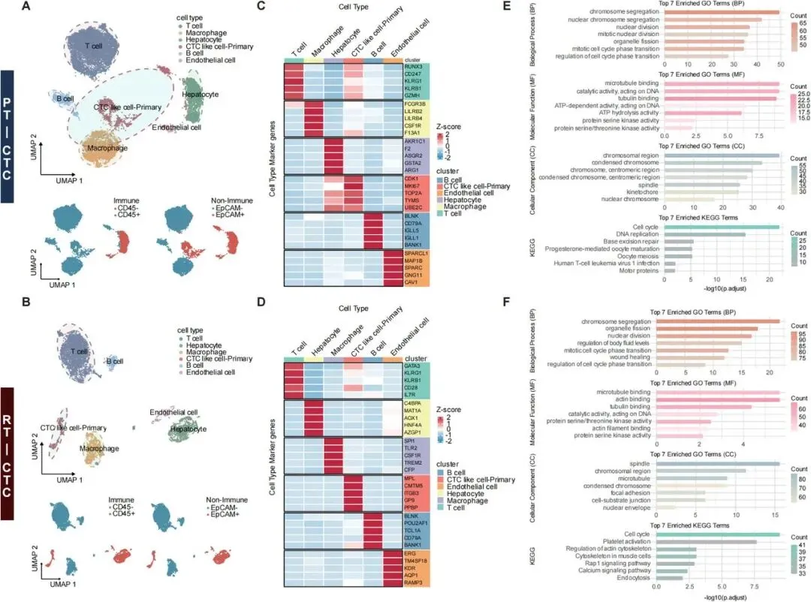
Fig.3
** **
4.发现了 CTC 样细胞与恶性肝细胞癌细胞之间的关系
作者将聚类后的免疫细胞在 PT-CTC 和 RT-CTC 中被鉴定为 CTC 样细胞。(Fig.4A-C)在 PT-CTC 模型中，一些 CTC 样细胞与肝细胞聚集在一起，形成一个独特的群体，CTC 样细胞上调成纤维细胞相关基因，而 RT-CTC 模型中的 CTC 和肝细胞-RAB17 上调肝细胞标志物，可能反映了转移前上皮间质转化（** EMT ）和转移后间质表皮转化因子（ MET） 级联反应**(Fig.4D）。
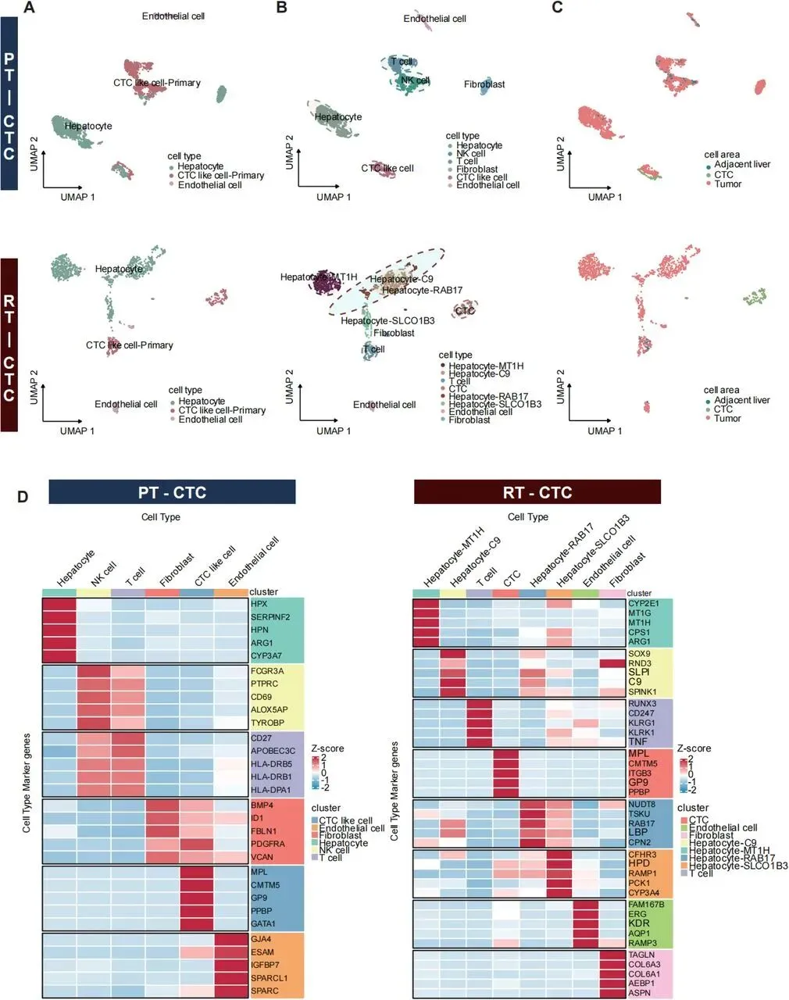
Fig.4
5. 绘制肿瘤进展轨迹图****
作者之后将在PT-CTC 和 RT-CTC 中鉴定的 CTC 样细胞和肝细胞被重新聚类。使用 SCPA， 分析了它们的重要途径(Fig.5A）。并使用 Slingshot 进行轨迹跟踪(Fig.5B)。对于 PT-CTC 模型，作者做了两个轨道，一个用于主要由 MYC 靶标 V1 激活的肝细胞的最终分化，另一个用于 CTC 的血红素代谢激活。发现MYC 靶标 V1 激活可促进生长，而血红素代谢有助于肿瘤克服移植过程中的失巢凋亡挑战和应对血流剪切压力的压力。根据 RT-CTC 模型，确定了一条轨迹，支持复发性肿瘤通常起源于早期原发性癌症半精化的假设，K-means 聚类证实了与原始轨迹的一致性。之后使用tradeSeq 中的 NB-GAM 分析确定了具有最高轨迹相关性的 6 个基因（Fig.5D）。随后认识到靶基因E2F 的激活促进 KIF18A 转录。此外，这些基因可导致发育迟缓、染色体断裂和缺失，从而导致 CIN。此外，KIF18A 是 WGD + / CIN细胞存活的必要条件。作者认为 KIF18A 显著影响肿瘤转移过程，通过减轻肿瘤移植过程中染色体不稳定性增加的压力来促进肿瘤传播。
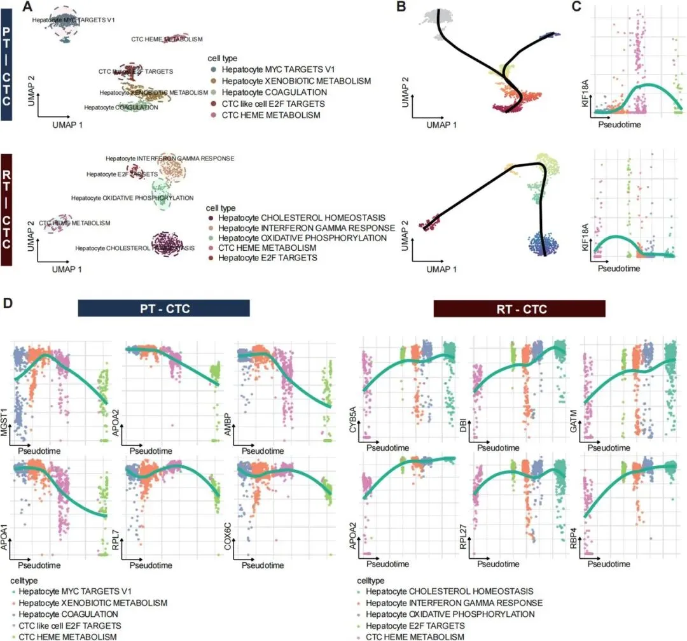
Fig.5
6. CCL5 在 CTC 样细胞分析中的作用及其对肿瘤转移信号通路的影响****
作者对 PT-CTC 和 RT-CTC 模型进行了细胞通讯分析（Fig.6A）和可视化通路活性。趋化因子 CCL5 是肝细胞癌患者 CTC 免疫逃避的关键介质。在 PT-CTC 中，CTC 样细胞经历更明显的上皮间质转化（EMT），而在 RT-CTC 中，它们表现出间质表皮转化因子( MET)。
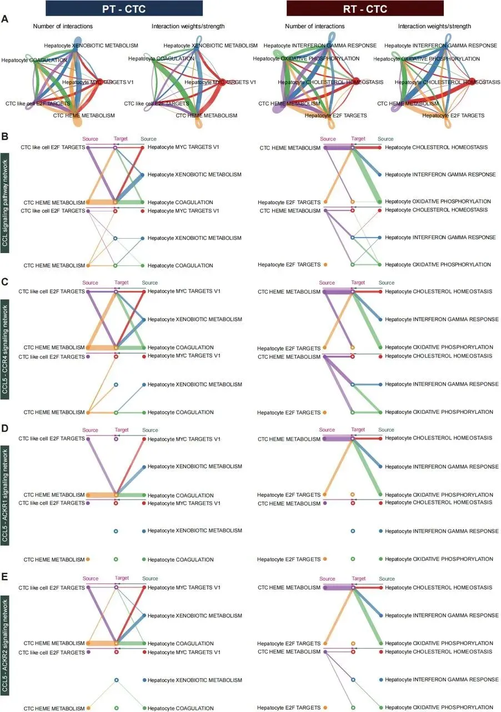
Fig.6
** **
7. KIF18A 在肝细胞癌转移中的作用及其对 CTC 行为的影响
根据 HPA 数据库 中 KIF18A 的基础表达水平选择合适的细胞系：HepG2，KIF18A 表达较低，Huh7表达较高（Fig.7A）。转录和蛋白水平评估证实了 KIF18A 在 HepG2 和 Huh7 细胞中的差异表达（Fig.7B）。为了进行实验验证，作者构建了具有 KIF18A 过表达 （OE） 和 shRNA 介导聚焦的 HepG2 和 Huh7 细胞系，并且重点关注 HepG2 KIF18A OE 和 Huh7 KIF18A sh3# 细胞系（Fig.7C-D）。
转录和蛋白质水平分析的结果表明，相对于 HepG2 细胞，Kif18A 在 HepG2 AR 细胞中上调，而与 HepG2 细胞相比，重新粘附的 HepG2 AR 细胞高表达KIF18A 基因（Fig.7G）。这与单细胞研究结果以及 CTC 转换前后 KIF18A 基因的增加一致（Fig.7C-D）
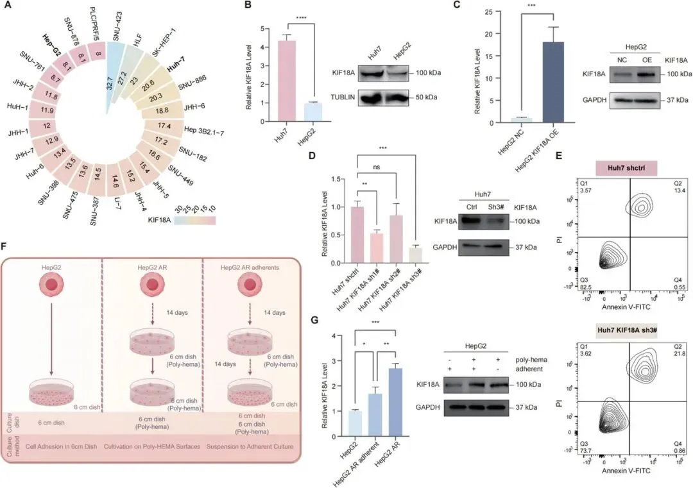
Fig.7
8. KIF18A 在肝细胞癌转移中的多方面作用及其与 cGAS-STING 通路的关联
作者发现KIF18A 是与失巢凋亡抵抗相关的关键基因，其许多功能与染色体动力学有关。在过表达 （OE） 和敲低 KIF18A 的细胞系中验证了 cGAS-STING 激活。HepG2 KIF18A OE 细胞显示 p-STING 和下游 p-TBK1 水平升高，以及微核形成（Fig.8A-B）。
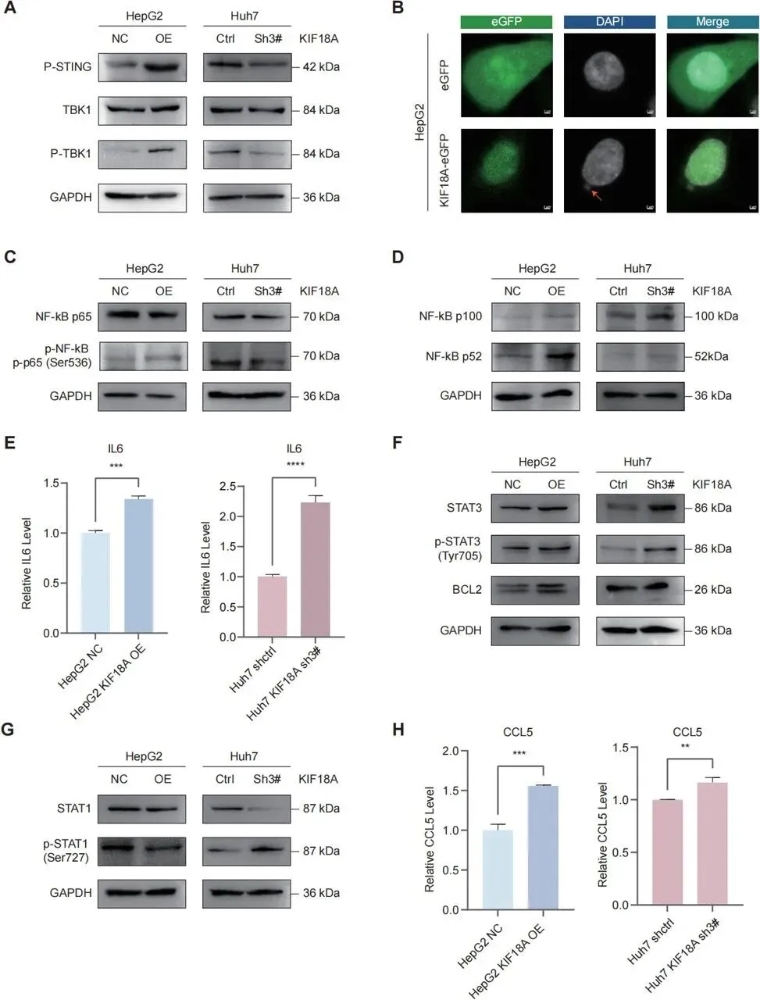
Fig.8
三、最后聊聊
综上所述**，** 作者发现KIF18A 可能通过刺激cGAS-STING 信号通路 促进肿瘤转移，从而影响 CCL5 的表达。KIF18A 可能通过 CCL5 协助循环肿瘤细胞进行血小板募集，从而促进肿瘤细胞扩散，并增强它们对失巢凋亡和 DNA 损伤的抵抗力。因此强调了 KIF18A 作为 HCC 新治疗策略靶点的潜力，并强调了其在 HCC 进展和转移中的关键作用。未来的研究将侧重于阐明 KIF18A 功能的具体机制，并研究有效靶向它以减少转移和改善患者预后的方法。

如何联系我们

 公众号后台消息回复不便，这里给大家留一下领取资料及免费服务器(免费两周学习版上架啦~)的微信号 ，方便各位随时交流（别问在么，添加时直接说来意）。呼声很高的交流群 也建好了，欢迎大家入群讨论：
公众号后台消息回复不便，这里给大家留一下领取资料及免费服务器(免费两周学习版上架啦~)的微信号 ，方便各位随时交流（别问在么，添加时直接说来意）。呼声很高的交流群 也建好了，欢迎大家入群讨论：
大家可以阅读完这几篇之后添加给生信入门初学者的小贴士 如何搜索公众号过往发布内容
已有生信基地联系方式的同学无需重复添加

 您点的每个赞和在看，我都认真当成了喜欢
您点的每个赞和在看，我都认真当成了喜欢